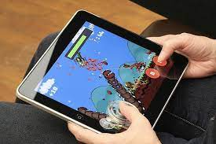
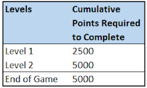
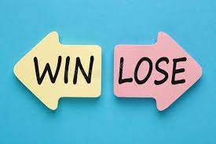

This part of the website is going to be about how the game works and how the game is interacting with the users.
The game controls in this game that i am making is going to be very simple but affective and is also easy to use for most people to use when playing the game cause you just need to hold your hands at each end of the tablet that we are going to use the game on. Once you have done that then to play the game you have to tilt the tablet from side to side right for making the bouncing slider go right and left for the bouncing slider to go left. Which makes it easy to understand how to play the game and also for the controls to be easy to use.
The scoring system in this game is also very simple as to how you score a point the basis is if the ball stays up on your bouncing slider then you gain 1 point everytime it hits it and to get passed Level 1 its 50 points without dying very difficult but it is do able in game. Level 2 For the scoring sytem is to get 100 without dying which is a very big task but can easily be done if you concentrate.
To win in this game you need to complete two Levels in the game Level 1 You need 50 points to get to Level 2.Level 2 you need 100 points to Win and complete the game. And to Lose you just need to die in the game when ball falls into lava and you need to restart again.
